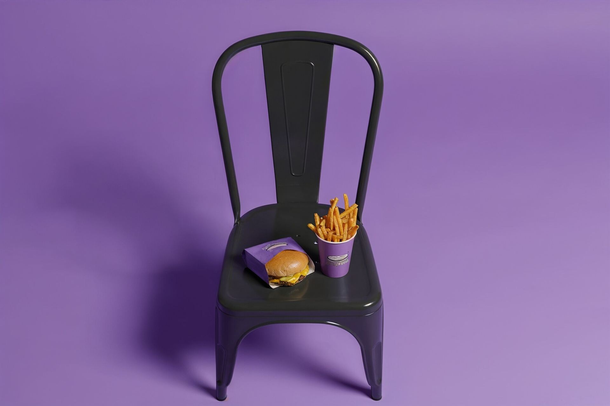

سماش برجر. أخذت شعاره وألوانه كما هي، وبنيت عليها كل شي بعدها: المحتوى، المنيو، وجلسات التصوير.
رمضان، العيد، يوم التأسيس، الكاش باك، وعروض بوليفارد وورلد — المنتج أو العرض أول شي تشوفه في كل بوست.
منيو البطاطس والبرجر بأسعاره، وإعلانات التوصيل — ستوري يوصّل المعلومة قبل ما يمرّ عليها الإصبع.
لقطات نظيفة على خلفية بيضاء للساندويتشات والبطاطس — جاهزة للمنيو وتطبيقات التوصيل.
سائق توصيل بخوذة بنفسجية، أكواب بطاطس طايرة، وبرجر على طاولة بلاط. إخراج إعلان كامل، وما احتاج ولا يوم تصوير.
شاهد جلسة التصوير كاملة